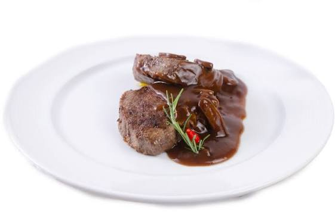

Filé ao molho madeira

Um clássico das cantinas e churrascarias brasileiras: medalhões de filé mignon selados no ponto, cobertos por um molho escuro e encorpado de vinho madeira com champignon. Combina com arroz branco e batata sauté.
Ingredientes:
- 800 g de filé mignon em medalhões
- 2 colheres de sopa de manteiga
- 1 colher de sopa de azeite
- 1 cebola picada
- 2 dentes de alho picados
- 1 xícara de champignon fatiado
- 1/2 xícara de vinho madeira
- 1 xícara de caldo de carne
- 1 colher de sopa de molho inglês
- 1 colher de sopa de amido de milho dissolvido em 1/4 de xícara de água
- Sal e pimenta-do-reino a gosto
Etapas:
- Tempere os medalhões com sal e pimenta.
- Aqueça o azeite e 1 colher de manteiga numa frigideira em fogo alto.
- Sele os medalhões por 3 a 4 minutos de cada lado, no ponto que preferir, e reserve.
- Na mesma frigideira, refogue a cebola e o alho na manteiga restante.
- Adicione o champignon e deixe dourar.
- Despeje o vinho madeira, raspando o fundo da frigideira, e deixe reduzir por 2 minutos.
- Junte o caldo de carne e o molho inglês e cozinhe por 5 minutos.
- Acrescente o amido dissolvido e mexa até o molho engrossar.
- Volte os medalhões ao molho por 1 minuto para aquecer e sirva.